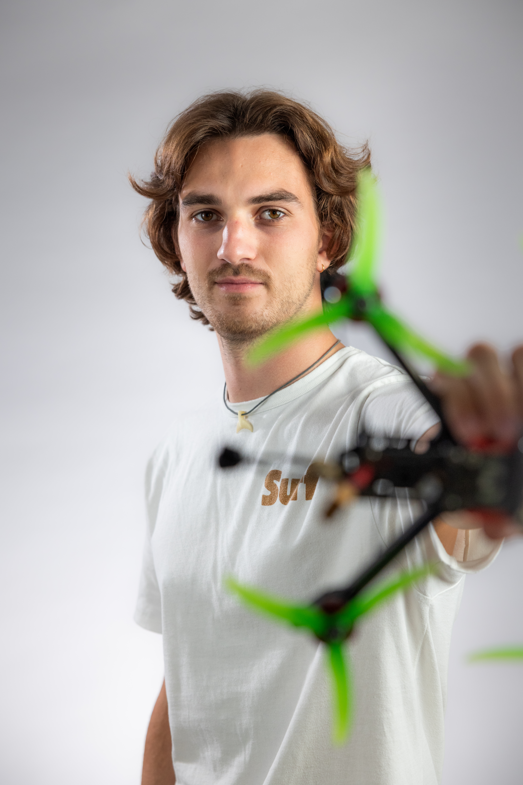

Reportages, films de marque, contenus pour les réseaux sociaux : en photos comme en vidéos, je développe une approche originale dans mes prises de vue. Je vais là où l'œil n'a pas l'habitude, j'amène un regard neuf sur une discipline, un lieu, une histoire. Le drone et notamment le FPV fait partie de ces angles que je recherche pour offrir une perspective inédite.
Je ne cherche pas la perfection, mais la beauté et l'émotion.
Mon parcours
Film de marque, contenus réseaux sociaux, captation d'événement ou reportage photos/vidéos— parlons de votre vision et de la meilleure façon de la mettre en lumière.
lancelot.prd@gmail.com